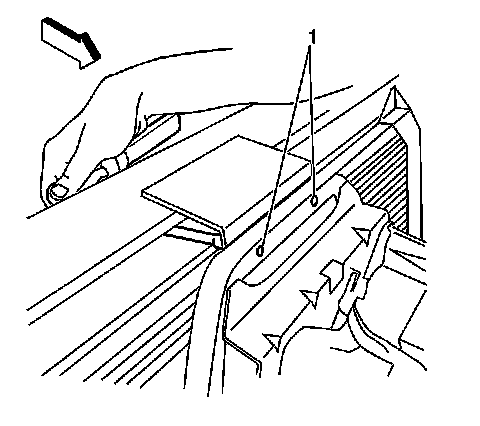
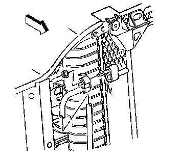
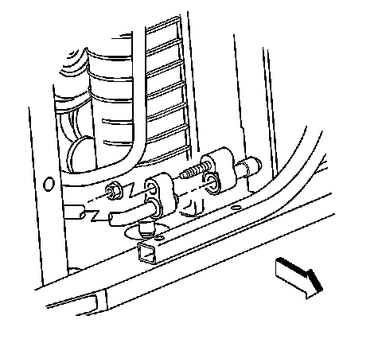
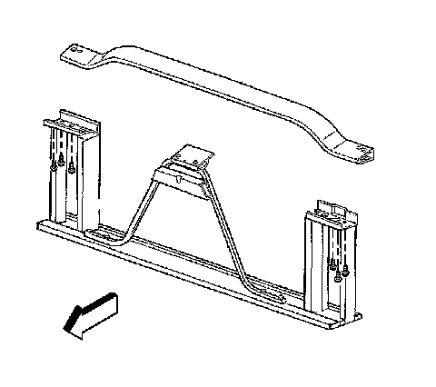

Condenser HVAC: Service and Repair
CONDENSER REPLACEMENT
TOOLS REQUIRED
J 39400-A Halogen Leak Detector
REMOVAL PROCEDURE

1. Recover the refrigerant. Refer to Refrigerant Recovery and Recharging. Refrigerant Recovery and Recharging
2. Remove upper tie bar.

3. Remove the compressor discharge hose assembly bolt from the condenser.
4. Disconnect the compressor discharge hose assembly from the condenser.

5. Remove the evaporator tube nut from the condenser.
6. Disconnect the evaporator tube from the condenser.
7. Remove the insulator retainer bolts and the upper insulator retainers.
8. Remove the condenser from the vehicle.
INSTALLATION PROCEDURE
1. IMPORTANT: If replacing the condenser, add the refrigerant oil to the condenser. Refer to Refrigerant System Capacities for system capacity information.
Install the condenser to the vehicle.
2. NOTE: Refer to Fastener Notice.
Install the upper insulator retainers and the insulator retainer bolts.
Tighten the bolts to 2.4 N.m (21 lb in).
3. Connect the evaporator tube to the condenser using new sealing washers.
4. Install the evaporator tube nut to the condenser.
Tighten the nut to 16 N.m (12 lb ft).
5. Connect the compressor discharge hose to the condenser using new sealing washers.
6. Install the compressor discharge hose nut to the condenser.
Tighten the nut to 16 N.m (12 lb ft).

7. Install the lower bolts to the hood latch support bracket.
Tighten the bolts to 9 N.m (80 lb in).
8. Install the tie bar to radiator brace bolts (1). Access the bolts from the rear of the upper radiator support.
Tighten the bolts to 9 N.m (80 lb in).
9. Evacuate and recharge the system. Refer to Refrigerant Recovery and Recharging. Refrigerant Recovery and Recharging
10. Leak test the fittings of the component using the J 39400-A.